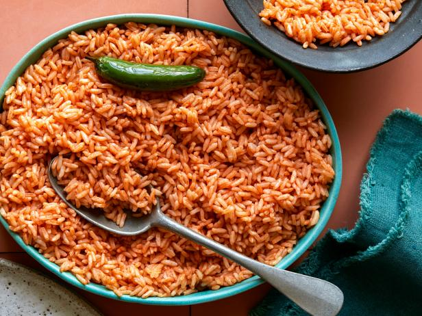

Arroz

Description
Mexican rice, also known as arroz a la mexicana, arroz mexicano, or arroz rojo in Spanish, is a Mexican side dish made from white
rice, tomato, garlic, onion, and perhaps other ingredients.
Ingredients
- 1 cup long grain white rice
- 1/4 cup olive oil
- 1/4 diced onion
- 1 medium diced garlic clove
- 2 cups hot water
- 1/2 cup hot chick broth
- 1/2 cup tomato sauce
- 1 tsp salt
Steps
- In a medium saucepan (preferably nonstick), heat the oil on medium heat. Once hot, add the rice.
- Using a wooden spoon, sauté the rice until it turns a golden-brown color (be careful it does not burn). This should take about 5-7 minutes.
- Place a fine mesh sieve over a bowl or heat-resistant container. Pour the rice and the oil into the sieve and allow the oil to drain from the rice.
- Add diced onion and diced garlic to the saucepan where you cooked the rice. There will be just enough oil left in the saucepan to sauté the onion and garlic. Sauté until soft and fragrant, about 3 minutes.
- Then, add the rice back in, along with 1 cup of hot water, the 1/2 cup of broth (or vegetable broth), tomato sauce, and the salt.
- Using a fork (and only a fork), carefully stir everything together just until combined. This is the only time you want to stir during the cooking process. Too much stirring will break up the rice and make it mushy.
- Bring the mixture to a simmer, turn down the heat to medium-low and cover.
- After about 10-12 minutes, use a fork to dig a small hole in the middle of the rice until you reach the bottom of the pot. If there isn’t anymore water left, add another 1/2 cup of hot water and cover again. However, if there is still water, wait another minute or two to make sure the water has dried up before adding the water.
- After about 5 minutes, make a small well again and check for water. If there isn’t anymore water left, add another 1/2 cup of hot water and cover again.
- This last time the water should dry much faster, in about 2-3 minutes. Be sure to not leave the rice unattended so it doesn’t burn on the bottom.
- As soon as the water has dried up, take the rice off of the heat. Carefully fluff with a fork, being sure not to over-mix or break up the rice pieces.
- Serve.